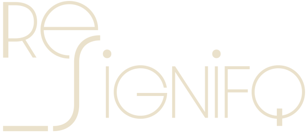

NUESTRO OBJETIVO
Un proyecto textil y social nacido en Fuentes Cabadas, concejo de Boal, para devolver el valor a la lana asturiana.
Cada año, toneladas de lana local se desechan por falta de mercado. Nosotros creemos que no es un residuo, es un recurso esperando una nueva oportunidad. Trabajamos para transformarla en productos útiles, bellos y sostenibles para el hogar, la agricultura y la creación artesanal.
EL PROYECTO
Un proyecto de innovación social y textil arraigado en el occidente de Asturias. Nuestra materia prima es la lana de las ovejas de aquí, la misma que durante siglos fue tejida por generaciones y que hoy se ha convertido en un problema paraganaderos y administraciones.
Nuestra labor comienza en las ganaderías colaboradoras, rescatando una lana que ya no tiene valor comercial. Luego viene la transformación: lavado, cardado, diseño. Y finalmente, la creación de productos que cuidan la tierra, decoran espacios con identidad y mantienen vivo un oficio que no queremos que desaparezca.
ReSignifq
Diseño y decoracióncon alma Brasileira en suelo Asturiano.
Piezas pensadas para espacios que buscan algo más que decoración. Alfombras, lámparas, paneles acústicos y objetos textiles donde el diseño contemporáneo se encuentra con las técnicas tradicionales del norte de España.
Cada pieza se elabora a mano en nuestro obrador, con lana local y procesos artesanales. Piezas únicas o de series limitadas, con la calidez, la textura y la historia que solo la lana puede ofrecer.
Soluciones naturales para el campo yel jardín.
La lana que no sirve para decorar tiene un enorme potencial para la tierra. Creamos con ella productos sencillos, efectivos y completamente naturales que ayudan acultivarde otra manera.
Pellets de lana, são fertilizante de liberación lenta que aportan nitrógeno de forma natural, mejoran la estructuradel suelo y retienen la humedad.
Mantilla de lana, acolchado natural que sustituye al plástico. Protege del frío, regula la humedad, ahuyenta babosas y, al final de la temporada, se convierte en abono.
Maseta delana, semillero biodegradable, se planta directamente en tierra: protege la raíz, favorece la germinación y alimenta el suelo al descomponerse.
¿Trabajas la tierra, tienes huerto o cultivo ecológico?
Cuéntanos qué haces y te avisamos cuando los primeros lotes estén listos.
EL OBRADOR
Un lugar para crear con lana asturiana.
Estamos poniendo en marcha un obrador donde la lana se pueda tocar y transformar. Un espacio con cardadoras, prensas y telares abierto a quienes quieran experimentar con este material.
Vecinos, artesanos, diseñadores, curiosos... Todos tendrán cabida en este lugar pensado para aprender, crear y mantener vivo el oficio. Un punto de encuentro donde las técnicas tradicionales se mezclan con nuevas miradas, y donde cada pieza cuenta una historia de territorio y trabajo bien hecho.
Si te gusta la idea, síguenos. El obrador ya se está preparando.
Si quieres saber más, colaborar, encargar algo o simplemente charlar sobre lana asturiana, estamos a un mensaje de distancia. [Formulario simple: Nombre / Email / ¿Qué te interesa?]